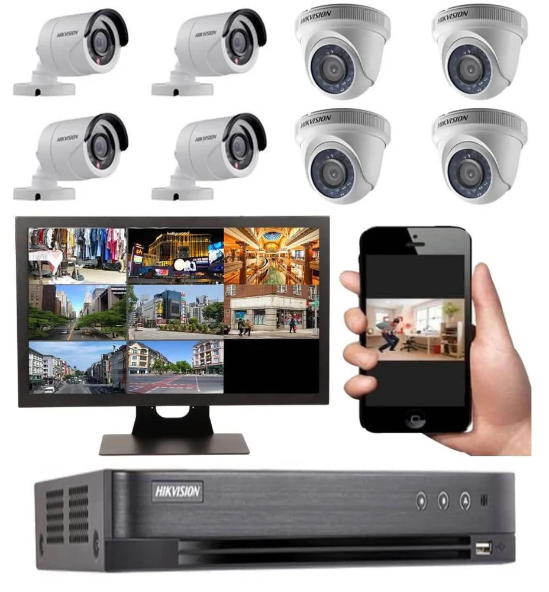

Vidéosurveillance
Une visibilité sur vos espaces, selon vos besoins.
Maison, commerce, bureaux ou entrepôt : définissons les zones à surveiller et les conditions de consultation des images.
La résolution, le stockage, la vision nocturne et l’accès à distance dépendent des références et de la configuration retenues.
Étudier cette solution